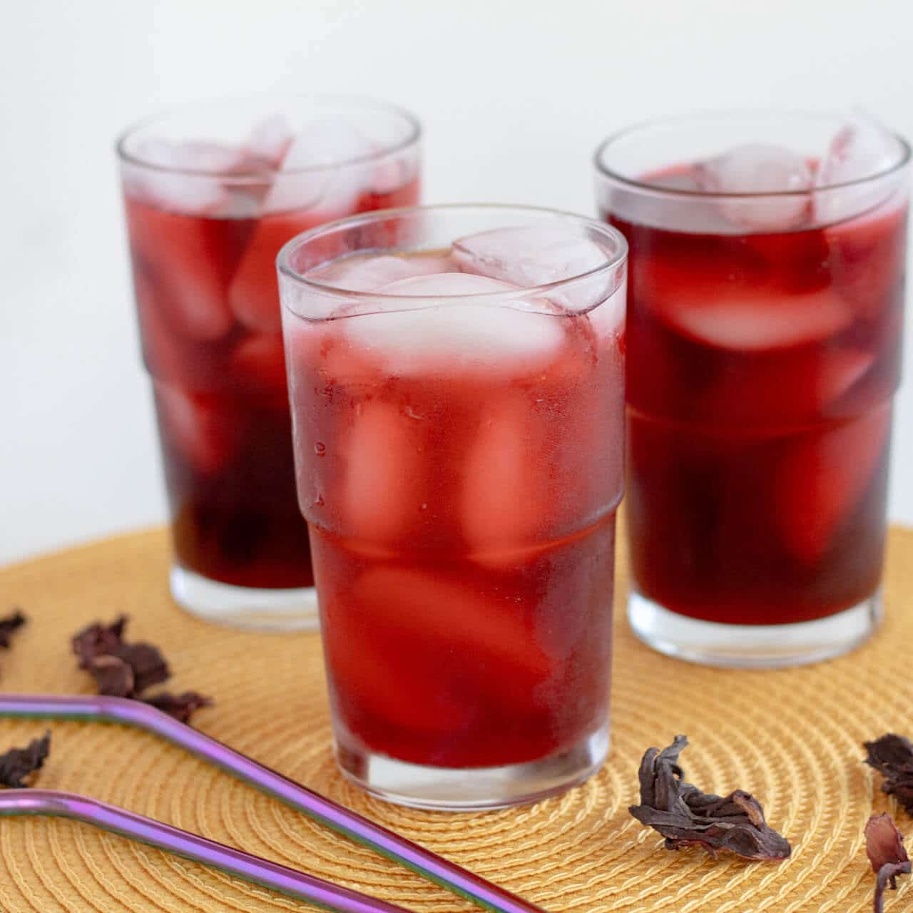

Home
Agua de Jamaica

How to prepare homemade agua de Jamiaca.
Agua de jamaica is a classic Mexican hibiscus agua fresca. It's floral, refreshing, and easy to make.
Ingredients
- 1 cup dried hibiscus flowers (flor de jamaica)
- 6 cups water
- 1/2-3/4 cup granulated sugar
- Ice, for serving
Steps
- Rinse the hibiscus. Rinse the dried flowers under cool water to remove any dust or debris.
- Make the infusion. Bring 4 cups of water to a boil. Add the hibiscus flowers, reduce the heat, and simmer for 5-10 minutes.
- Strain. Remove from the heat and strain the deep-red liquid into a large pitcher. Press the flowers gently with a spoon to extract their flavor.
- Sweeten. Stir in the sugar while the liquid is still warm so it dissolves easily.
- Dilute. Add the remaining 2 cups of cold water. Taste and add more sugar if needed.
- Chill and serve. Refrigerate until cold, then serve over plenty of ice.